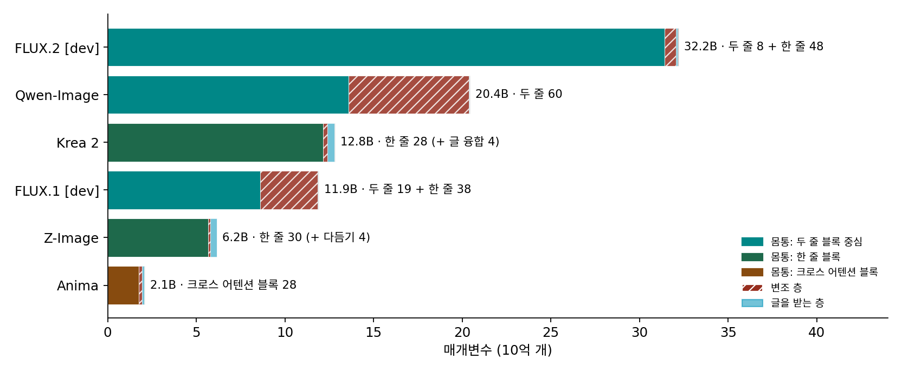

주요 디퓨전 트랜스포머 견주기: 같은 부품, 다른 조립
패치, 0에서 시작하는 adaLN, 합동 어텐션, 규모. 부품은 넷인데 2024년 이후의 모델들을 열어 보면 생김새가 꽤 다르다. 매개변수만 해도 20억 개에서 320억 개까지 퍼져 있고, 어떤 모델은 두 줄 블록만, 어떤 모델은 한 줄 블록만 쓰고, 어떤 모델은 아직 크로스 어텐션을 쓴다. 모델 이름과 크기만 보고 고르면 「FLUX.2 는 32B 라 가장 좋다」 같은 말밖에 남지 않는다. 같은 부품의 어느 손잡이를 어떻게 돌렸는지로 견주면, 모델마다 무엇을 아끼고 무엇에 썼는지가 보인다.
견주는 표
설정은 ComfyUI 의 모델 정의(comfy/ldm/{flux,qwen_image,lumina,krea2,anima}, comfy/model_detection.py, comfy/supported_models.py)와, 로컬에 가중치가 있는 모델은 그 파일의 텐서 모양으로 확인했다. 가중치가 없는 FLUX.1 [dev] 과 FLUX.2 [dev] 은 Black Forest Labs 공식 저장소의 설정 값을 넣었다. 매개변수는 그 설정으로 ComfyUI 모델을 실제로 만들어 센 것이고, 가중치 파일이 있는 다섯 모델은 파일의 텐서 크기 합과 한 개도 어긋나지 않았다(sources/dit/model_facts.py). 나온 해는 Hugging Face 저장소가 만들어진 해다.
| FLUX.1 [dev] | FLUX.2 [dev] | Qwen-Image | Z-Image | Krea 2 | Anima | |
|---|---|---|---|---|---|---|
| 만든 곳 · 해 | Black Forest Labs · 2024 | Black Forest Labs · 2025 | Qwen 팀 · 2025 | Tongyi-MAI · 2025 | krea.ai | CircleStone Labs·Comfy Org · 2026 |
| 매개변수 | 119억 | 322억 | 204억 | 62억 | 128억 | 21억 |
| 몸통 블록 | 두 줄 19 + 한 줄 38 | 두 줄 8 + 한 줄 48 | 두 줄 60 | 다듬기(글 2, 그림 2) + 한 줄 30 | 글 융합 4 + 한 줄 28 | 크로스 어텐션 블록 28 |
| 폭 · 머리 | 3072 · 24 | 6144 · 48 | 3072 · 24 | 3840 · 30 | 6144 · 48(열쇠·값 머리 12) | 2048 · 16 |
| 시간을 넣는 자리 | 블록마다 변조 층 | 공유 변조 층 | 블록마다 변조 층 | 블록마다(좁은 시간 벡터) | 공유 변조 층 + 블록마다 벡터 | 블록마다(좁은 길) |
| 글 인코더 · 꺼내는 층 | T5-XXL 마지막 층 + CLIP-L 문장 벡터 | Mistral Small 3(24B) 10·20·30층 | Qwen2.5-VL-7B 마지막 층 | Qwen3-4B 끝에서 둘째 층 | Qwen3-VL-4B 12개 층 | Qwen3-0.6B 마지막 층 + 어댑터 6블록 |
| 글이 들어가는 자리 | 합동 어텐션 (+ 문장 벡터는 변조로) | 합동 어텐션 | 합동 어텐션 | 합동 어텐션 | 합동 어텐션 | 크로스 어텐션 |
| 위치 인코딩 축 (머리 하나의 토막) | 번호·행·열 (16, 56, 56) | 네 축 (32 × 4) | 번호·행·열 (16, 56, 56) | 번호·행·열 (32, 48, 48) | 번호·행·열 (32, 48, 48) | 시간·행·열 |
| 잠재 그림 · 패치 | 1/8, 채널 16 · 2 | 1/16, 채널 128 · 1 | 1/8, 채널 16 · 2 | 1/8, 채널 16 · 2 | 1/8, 채널 16 · 2 | 1/8, 채널 16 · 2 |
| VAE | FLUX.1 VAE | FLUX.2 VAE | Qwen-Image VAE | FLUX.1 과 같은 꼴 | Qwen-Image VAE | Qwen-Image VAE |
(Krea 2 의 머리 수 48은 질의 머리이고, 열쇠·값은 머리 12개를 넷씩 나눠 쓴다. Krea 2 의 위치 토막은 머리 하나 128 = 32 + 48 + 48이고 글 토큰은 모두 (0, 0, 0)이다. FLUX.2 는 그림 토큰이 (번호, 행, 열, 0), 글 토큰이 (0, 0, 0, 토큰 순서)를 받는다.)

표를 읽는 법
같은 부품의 손잡이로 줄을 세우면 흐름이 넷 보인다.
첫째, 두 줄에서 한 줄로. SD3 와 Qwen-Image 는 두 줄 블록만 썼고, FLUX.1 은 앞의 3분의 1만, FLUX.2 는 앞의 7분의 1만 두 줄로 남겼다. Z-Image 와 Krea 2 는 몸통을 모두 한 줄로 하고, 글과 그림이 서로 다른 말투를 맞추는 일은 몸통 앞의 짧은 다듬기 단계로 옮겼다.
둘째, 변조 층 덜어 내기. FLUX.1 과 Qwen-Image 에서 4분의 1~3분의 1이던 변조 층의 몫이 FLUX.2, Z-Image, Krea 2 에서 2% 안팎으로 줄었다. 계산은 그대로 두고 메모리만 아끼는 쪽이다.
셋째, 글 인코더는 더 큰 언어모델로, 여러 층으로. T5 와 CLIP 에서 대화형 언어모델과 시각언어모델로 옮겨 갔고, FLUX.2 와 Krea 2 는 층 하나가 아니라 여러 층의 은닉 상태를 쌓아 넘긴다. 어느 층을 꺼내는지와 그 까닭은 글 인코더를 다룰 때 따로 본다.
넷째, 그림 토큰 수는 모두 같다. 1024 × 1024 그림은 모두 그림 토큰 4,096개다. 같은 그림을 두고 모델 사이의 연산량을 가르는 것은 그림 토큰 수가 아니라 폭과 깊이, 곧 몸통의 매개변수다.
Anima 가 크로스 어텐션을 쓰는 것은 흐름을 거꾸로 가는 것처럼 보인다. 그런데 Anima 의 몸통은 처음부터 지은 것이 아니라 NVIDIA 가 공개한 Cosmos-Predict2 2B 모델에서 왔고(Anima 모델 카드의 base_model), 그 모델이 크로스 어텐션 구조였다. 그 출발점이 무엇을 정하고 무엇을 열어 두는지는 아래 문제에서 따져 보자.
문제 14. 같은 그림, 다른 셈
1024 × 1024 그림 한 장(그림 토큰 4,096개)을 한 걸음 예측한다. 몸통 블록의 매개변수(변조 층 뺌)는 FLUX.1 [dev] 86억, FLUX.2 [dev] 314억, Z-Image 57억, Krea 2 122억, Anima 18억이다. (가) 「몸통 매개변수 × 토큰 수」(곱셈·덧셈 짝)로 걸음 하나의 행렬 곱 연산량을 어림하라. (나) 걸음 수가 FLUX.2 [dev] 은 50, Anima 의 증류판(몇 걸음 모델)은 8이라면 그림 한 장의 연산량은 몇 배 차이인가? (다) 이 어림이 빼놓은 것은 무엇이고, 어느 모델에서 그 몫이 더 큰가?
위젯 4 에서 모델을 고르고 글 토큰 수를 0으로 두면 (가)의 어림과 견줄 수 있다. 글 토큰을 늘리면 (다)에서 무엇이 달라지는지도 보인다.

(가) FLUX.1 은 86억 × 4,096 = 35조 2,600억 짝, FLUX.2 [dev] 128조 6,400억, Z-Image 23조 2,000억, Krea 2 49조 7,900억, Anima 7조 2,200억 짝이요.
(나) 128조 6,400억 × 50 = 6,432조, 7조 2,200억 × 8 = 57조 7,000억이라 111배쯤이요.

(다)는요? 이 셈에 빠진 게 뭐죠?

어텐션 쌍을 세는 셈이야. 쌍은 토큰 수의 제곱이라 토큰이 같으면 모델마다 쌍 수는 같지만, 쌍 하나를 견주는 비용이 폭에 비례하니까 폭이 넓은 FLUX.2 와 Krea 2 에서 더 커.
그림 토큰은 4,096개로 같다고 했죠. 정말 모든 모델에서 블록을 지나는 토큰이 4,096개일까요?

아, 글 토큰이요. 합동 어텐션 모델은 글 토큰도 몸통을 지나니까 4,096 + 글 토큰 수만큼 세야 해. 크로스 어텐션인 Anima 는 글 토큰이 몸통을 안 지나고 읽히기만 하고.

그럼 긴 프롬프트를 넣으면 합동 어텐션 모델은 그만큼 느려지고, Anima 는 거의 그대로겠네요.

그래요. 같은 그림 크기라도 글을 몸통에 태우느냐, 옆에서 읽기만 하느냐가 셈을 바꿔요.

택배 트럭 크기는 같아도, 동승자를 태우면 그만큼 기름이 더 드는 거랑 같네요.
문제 15. 몸통을 빌려 오면
어떤 팀이 그림 생성 모델을 처음부터 지으려다, 공개된 영상 생성 모델의 몸통(크로스 어텐션 블록 28개, 폭 2048)을 빌리기로 했다. (가) 몸통을 빌릴 때 그대로 따라야 하는 것과 바꿀 수 있는 것을 표에서 골라 보라. (나) 글 인코더를 원래 모델의 것보다 작은 언어모델로 바꾸려면 몸통과 글 인코더 사이에 무엇이 필요한가? (다) 같은 팀이 나중에 합동 어텐션 모델로 바꾸고 싶다면 무엇을 다시 학습해야 하는가?
(가) 블록 수, 폭, 크로스 어텐션 구조는 가중치에 묶여 있으니까 따라야 하고, 글 인코더는 바꿀 수 있어요.
위치 인코딩와 VAE 는요?
몸통이 배운 위치 축과 잠재 그림의 채널 수도 묶여 있어요. VAE 를 바꾸면 들어오는 수가 달라지니까 첫 선형 층부터 어긋나요. ComfyUI 설정을 보면 Anima 도 원래 몸통인 Cosmos-Predict2 와 같은 꼴(Wan21)의 16채널 잠재 그림을 받아요.

(나)는 크로스 어텐션의 열쇠·값이 받는 폭과 분포를 맞춰 줄 단계가 필요해. Anima 의 어댑터 6블록이 그거고. 원래 몸통은 다른 글 인코더의 출력을 읽도록 배웠으니까, 새 인코더 출력을 그 꼴로 바꿔 주는 통역이 있어야 해.
(다)는요?

합동 어텐션은 글 토큰도 블록을 지나야 하니까, 블록 안에 글 줄의 가중치가 새로 생기거나 그림 가중치를 글에도 써야 해. 크로스 어텐션 층은 빠지고. 블록의 짜임이 바뀌니까 몸통을 거의 다시 학습해야 할 거야.
그래요. 몸통을 빌리면 빨리 시작하는 대신 그 몸통의 조립을 함께 물려받아요. 표의 「크로스 어텐션」 한 칸이 그 사정을 담고 있어요.

중고차를 사면 엔진은 못 바꾸고 오디오만 바꿀 수 있는 거네요. 엔진을 바꾸려면 차를 새로 사야 하고요.